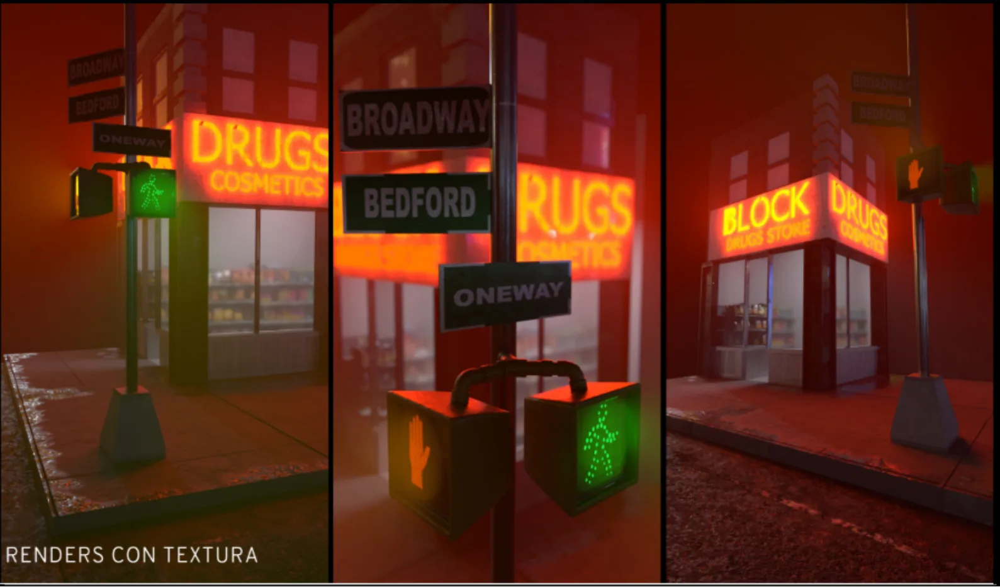
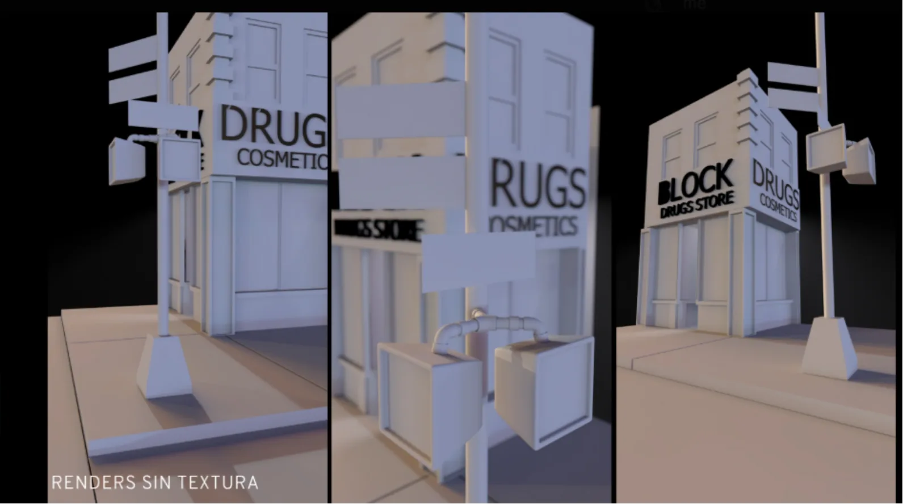
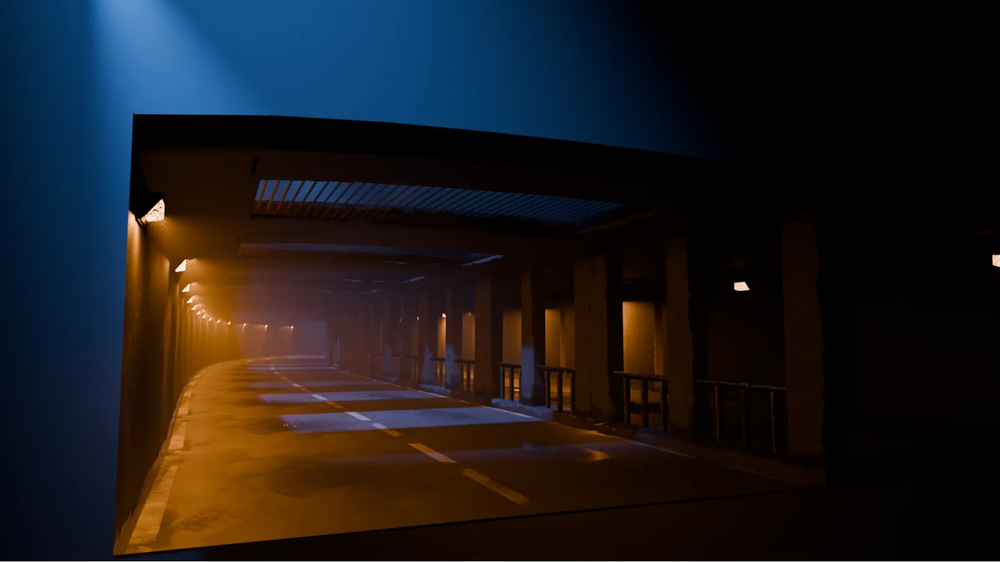
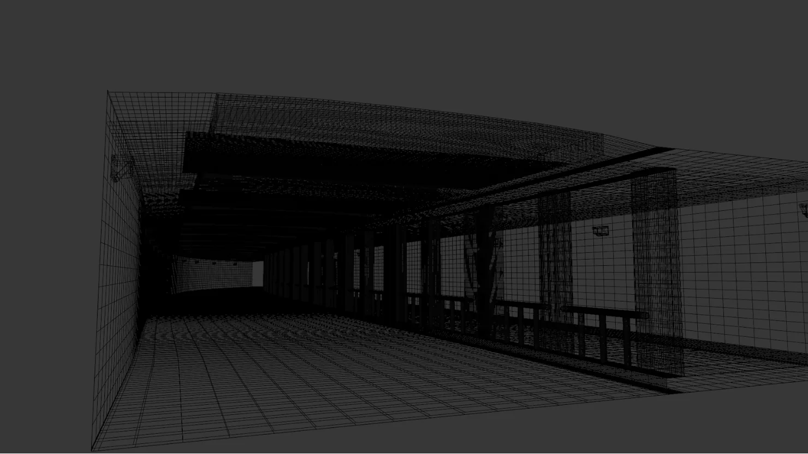
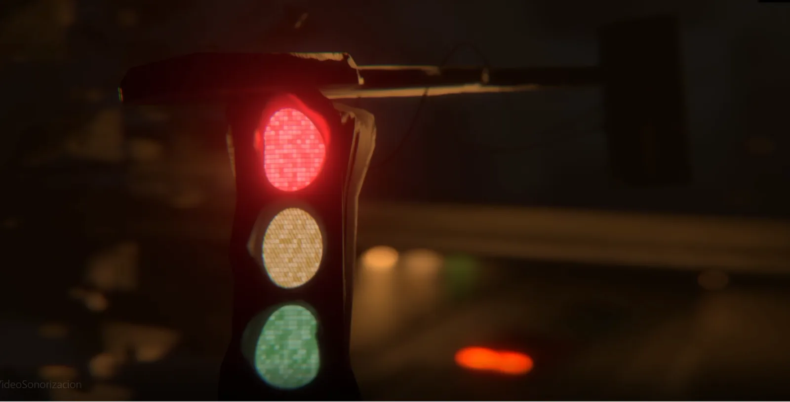
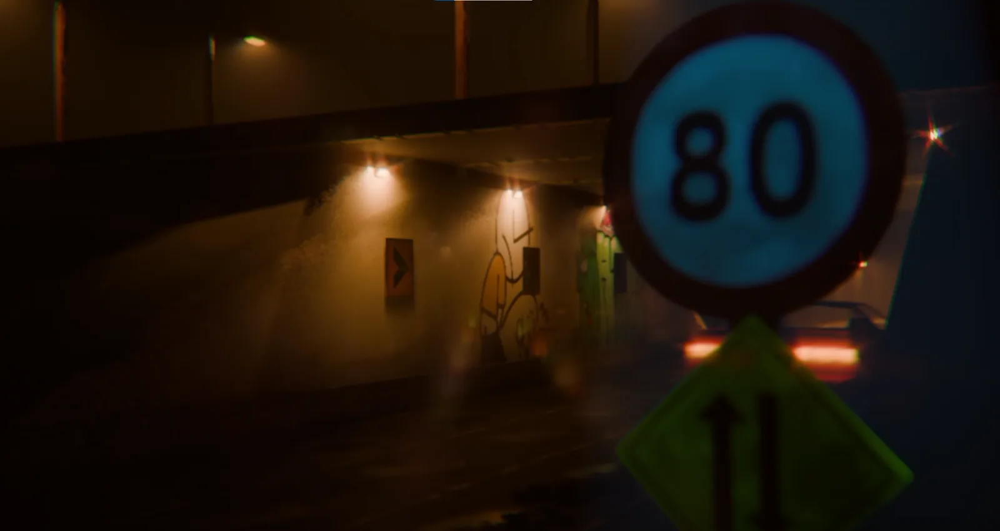
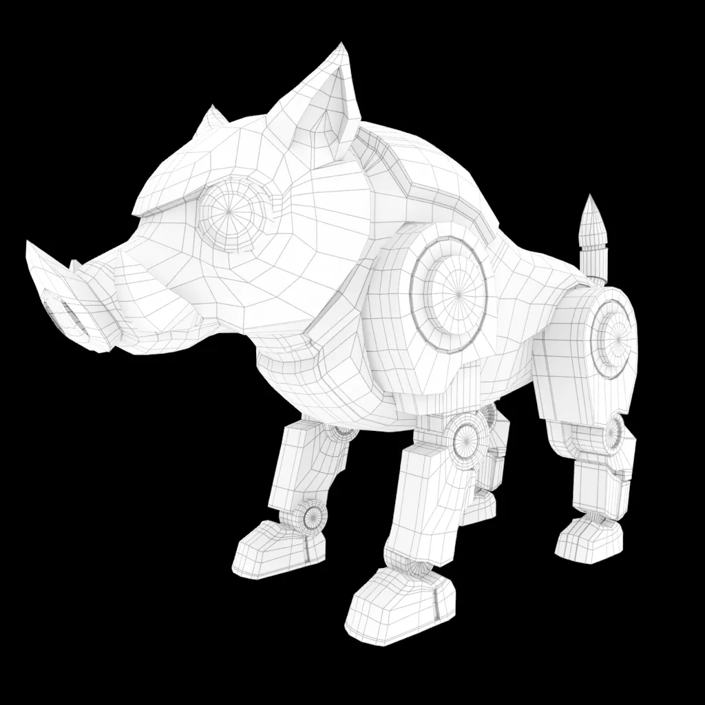
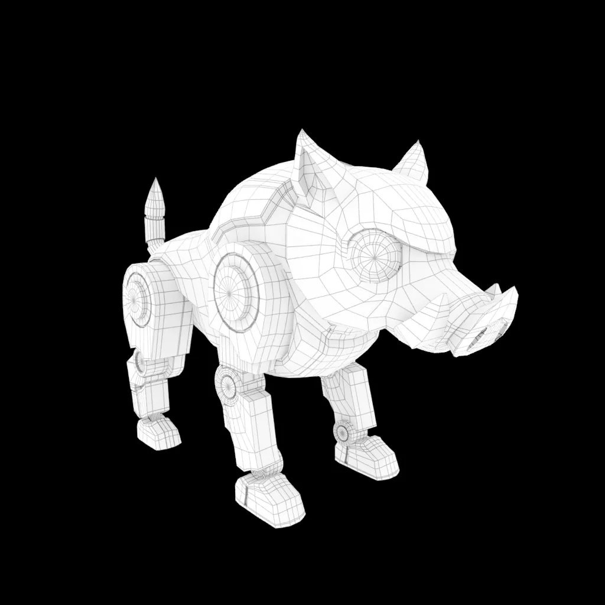
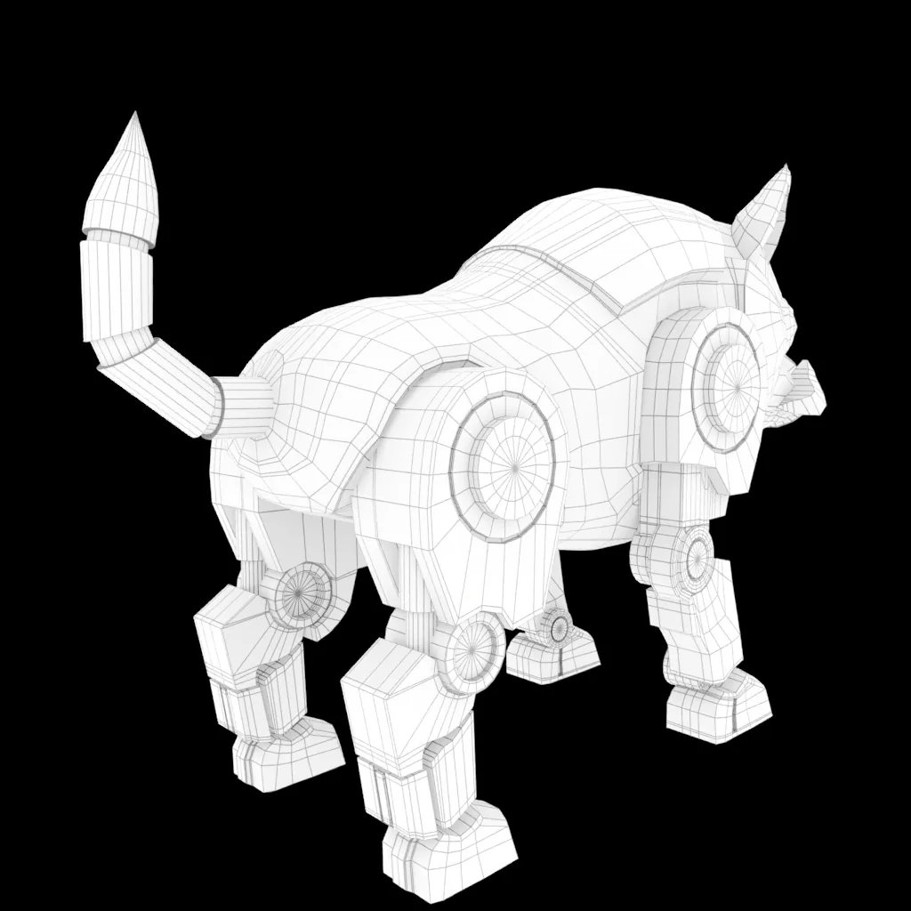

Post-producer · Freelance, remote
Prozan — stop-motion commercial
Post-production of a stop-motion commercial: editing, cleanup and final delivery.
Nov 2025 – Jan 2026
Audiovisual & 3D Portfolio · 2026
3D environments, characters, cinematography and post-production. I build worlds, light them and tell stories with them.
3D Environment
A night-time city corner built from scratch: storefront, neon signage, street signs and pedestrian signals, with fog and wet pavement to sell the mood.


3D Environment · Short animation
An underpass environment built for a short animated video with its own sound design (sonorización). Volumetric fog, practical lights and shallow depth of field give it a cinematic, lonely feel.




3D Character
A robotic lynx character modeled with clean, animation-ready topology. Shown as a turntable in its final shading and as a wireframe pass.
3D Character
A stylized mechanical boar built from hard-surface pieces: armored body, articulated legs and joint details, modeled with readable edge flow.



Film & commercial work
Freelance productions where I led the image, the edit and the effects.
Post-producer · Freelance, remote
Post-production of a stop-motion commercial: editing, cleanup and final delivery.
Nov 2025 – Jan 2026
Director of Photography & Video Editor
Cinematography and editing, using generative AI to create some of the shot transitions.
Commercial
Director, Cinematographer & VFX Supervisor
Directed and shot the short film and supervised its visual effects.
Short film
Let’s work together
diego.gtz.chavez21@gmail.com · +52 33 3250 6601